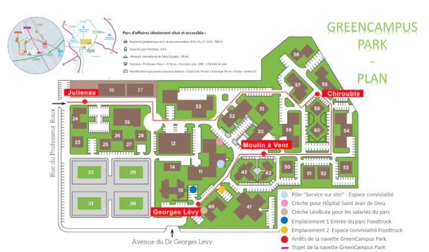
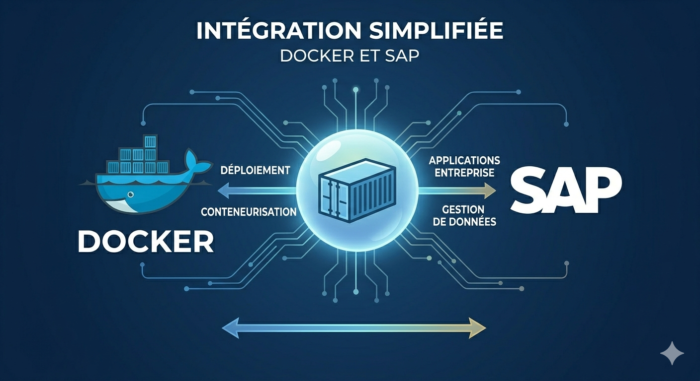

J’ai effectué un stage de 5 semaines, du 18 mai au 19 juin 2026, au sein de la start-up lyonnaise Mastersys située au Green Campus Park de Vénissieux. Sous la direction de mon maître de stage M. Adil Krikib, consultant progiciel, j'ai travaillé sur le déploiement de solutions de gestion.

Mes missions principales ont consisté à préparer l'environnement système sous OS Linux pour l'accueil d'images Docker SAP, puis à installer le progiciel au sein de cette infrastructure virtualisée. J'ai enfin procédé à la configuration du système via la création des comptes utilisateurs et le paramétrage des ports de communication.